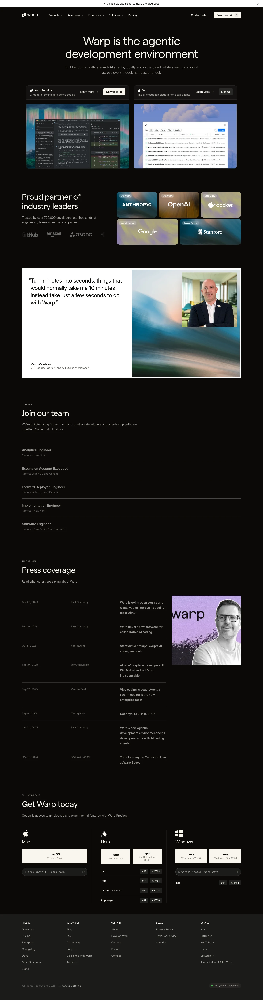

Warp 主题
Warp 的 Design.md 主题展示，围绕开发工具、媒体内容、暗色界面、SaaS 产品组织页面。
Modern terminal. Dark IDE-like interface, block-based command UI.
开发工具媒体内容暗色界面SaaS 产品浅色界面B2B 产品效率工具专业工具

来源
- 来源
- getdesign.md
- 镜像
- github:VoltAgent/awesome-design-md
- 网站
- https://warp.dev/
- 详情
- https://getdesign.md/warp/design-md
色板
#2b2622: #2b2622#f7f5f0: #f7f5f0#c9c0ad: #c9c0ad#dad2c1: #dad2c1#aea69c: #aea69c#383330: #383330#3f3a36: #3f3a36#a0a0a0: #a0a0a0#000000: #000000#fbbf24: #fbbf24#8a8a8a: #8a8a8a#0a0a0a: #0a0a0a
字体
display: Interbody: Robotomono: DM Monohints: Inter,Roboto,DM Mono,Instrument Serif,ui-monospace,SFMono-Regular,Menlo,mono-kickers
圆角
control: 3pxcard: 4pxpreview: 0pxpill: 9999pxsource: design-md
间距
xxs: 2pxxs: 4pxsm: 8pxmd: 10pxlg: 16pxxl: 24px2xl: 32px3xl: 48px4xl: 64px5xl: 96pxsource: design-md
使用建议
建议
- 建议：Reserve {colors.primary} off-white for primary CTA pills and default text. There is no chromatic accent。
- 建议：Use tight {rounded.sm} 3 px or {rounded.md} 4 px button radii. The brand never uses generous pills for CTAs。
- 建议：Set hero headlines in Inter weight 400 with {-1.6 px} tracking. The brand reads as quietly confident。
- 建议：Pair Inter (sentence-case) with DM Mono (code blocks, terminal mockups)。
- 建议：Keep the warm-dark canvas tone — pure black breaks the brand's identity。
避免
- 避免：引入额外的彩色品牌强调色；蓝色只保留给文章正文里的内联链接。
- 避免：render the hero headline in heavy weight (700+). The brand's display is intentionally light。
- 避免：use generous pill CTAs. The brand's button radius is 3-4 px, almost rectangular。
- 避免：replace the warm dark canvas with neutral gray or pure black. The warmth IS the brand。
- 避免：给卡片添加柔和投影，层级应由表面对比和细分割线承担。
查看 DESIGN.md